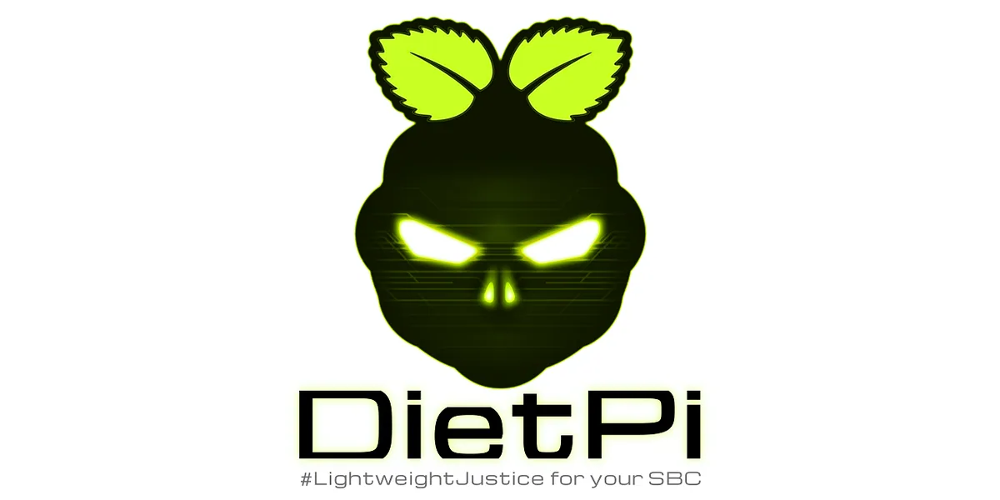
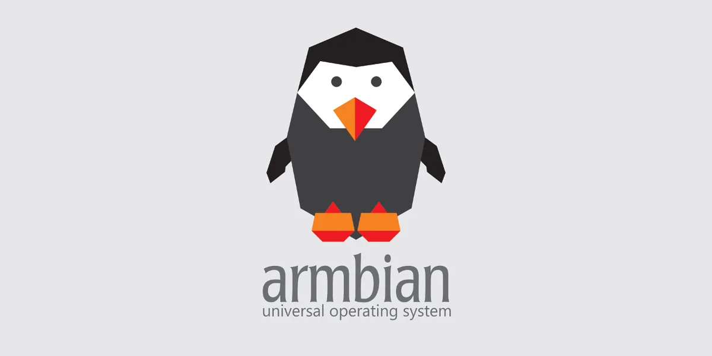
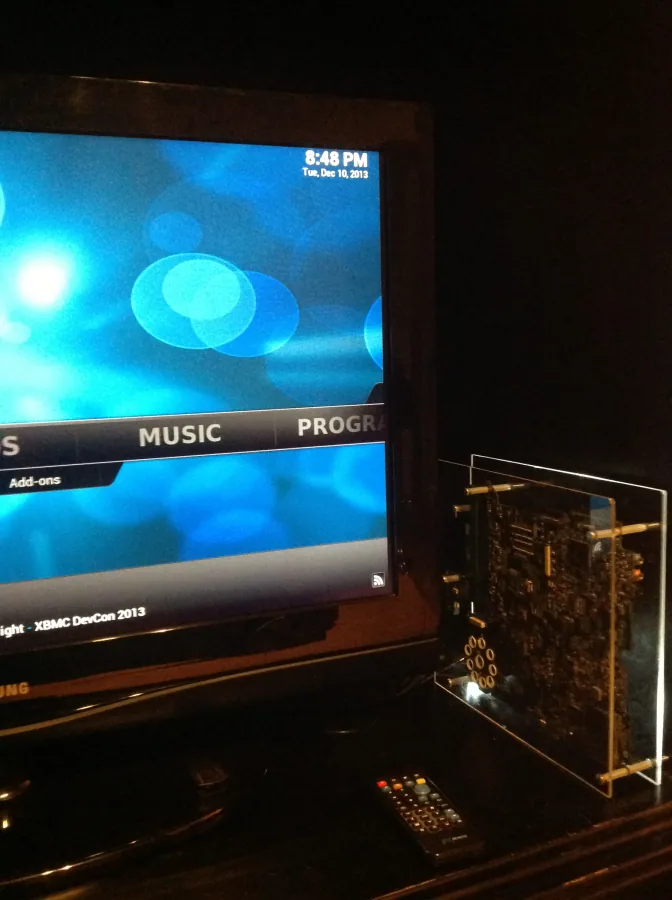
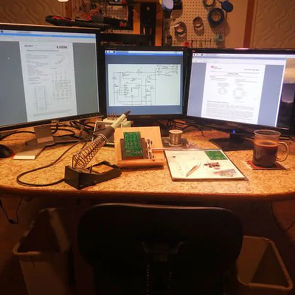
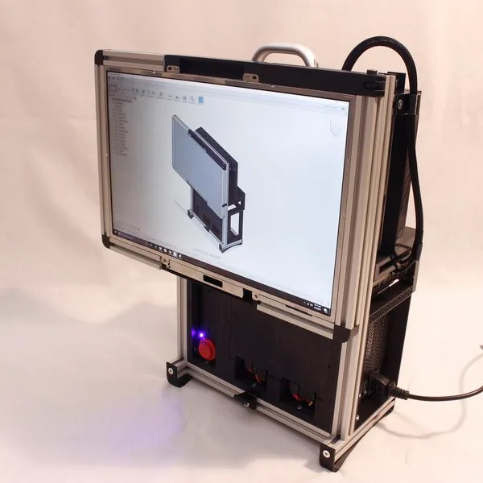
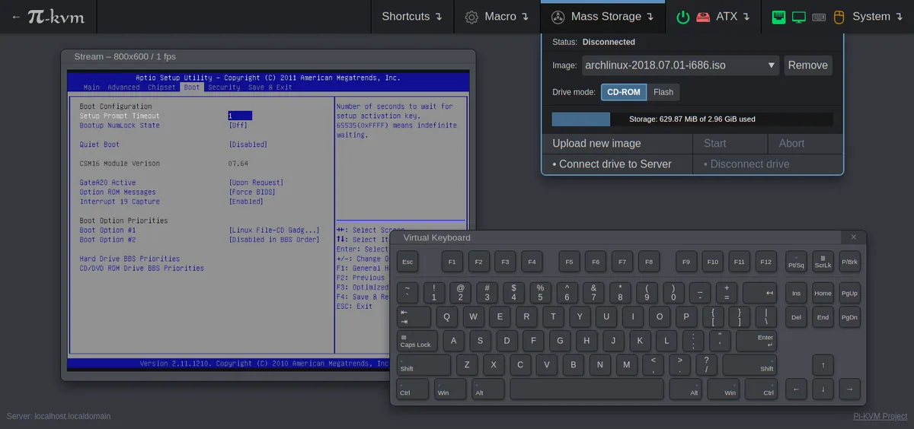
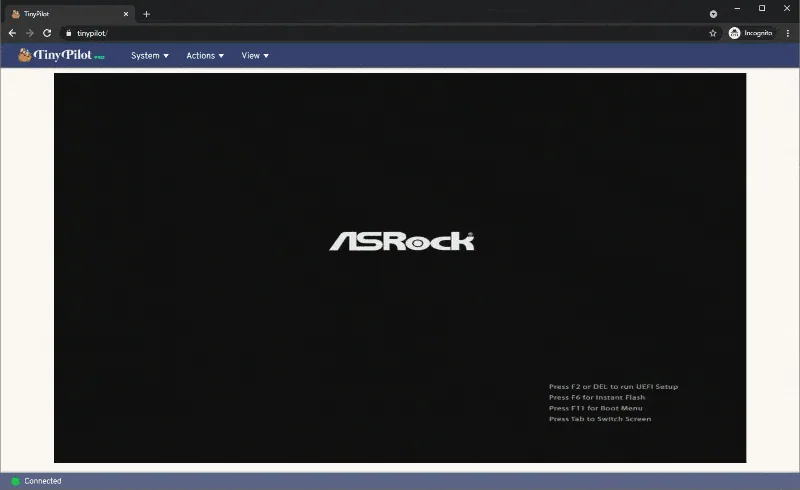

DietPi
Reduce the work of deploying services on old single-board computers with a lightweight OS and software management.
Showing records 1–28; filtering loads all pages in this category.

Reduce the work of deploying services on old single-board computers with a lightweight OS and software management.
Turn an old mini PC or thin client into a home automation server.
 Fallback
FallbackInstall alternative firmware on selected old Chromebooks/Chromeboxes to run other operating systems.
Provide boot and driver patches for selected Macs no longer officially supported by newer macOS versions.
FallbackThe goal is to move Acer Aspire 1 A114-61 beyond its abandoned vendor OS and try postmarketOS as a Linux terminal, test device or dedicated controller.
FallbackThe goal is to move Acer Chromebook 13 CB5-311 beyond its abandoned vendor OS and try postmarketOS as a Linux terminal, test device or dedicated controller.
FallbackThe goal is to move Acer Chromebook 311 C722/C722T beyond its abandoned vendor OS and try postmarketOS as a Linux terminal, test device or dedicated controller.
FallbackThe goal is to move Acer Chromebook 311 CB311-11H/CB311-11HT beyond its abandoned vendor OS and try postmarketOS as a Linux terminal, test device or dedicated controller.

Build or customize Linux images for an older ARM board.
Turn a PC meeting upstream prerequisites into a ChromeOS device.
FallbackThe goal is to move CDI eduGear Chromebook K beyond its abandoned vendor OS and try postmarketOS as a Linux terminal, test device or dedicated controller.
FallbackThe goal is to move CDI EduGear Chromebook M beyond its abandoned vendor OS and try postmarketOS as a Linux terminal, test device or dedicated controller.
FallbackAdd a command-line software ecosystem to a Chromebook still in service.
FallbackThe goal is to move ClockworkPi uConsole CM5 beyond its abandoned vendor OS and try postmarketOS as a Linux terminal, test device or dedicated controller.
 Fallback
FallbackThe goal is to move ClockworkPi uConsole Raspberry Pi beyond its abandoned vendor OS and try postmarketOS as a Linux terminal, test device or dedicated controller.
FallbackThe goal is to move Comma 3X beyond its abandoned vendor OS and try postmarketOS as a Linux terminal, test device or dedicated controller.

A historical guide boots OpenELEC/XBMC from USB on a 1 GB Acer laptop connected to a television, showing that low-spec hardware once served as an HTPC.
FallbackThe goal is to move CTL Chromebook J2/J4 beyond its abandoned vendor OS and try postmarketOS as a Linux terminal, test device or dedicated controller.

The project uses a Raspberry Pi with spare monitors and accepts static documents or art through SCP, shared folders, a web page or WebSocket.
Official documentation and the build system live on the project site and Codeberg, with board-specific install paths.

The author pairs a 17-inch LCD from a GPU-failed laptop with a model-specific controller and retired desktop parts to complete a luggable Mark I computer.

Add browser-based remote control to an older computer without built-in management.

A thirty-step build reuses a laptop motherboard, IPS display, Wi-Fi antennas, camera and speakers in a new wooden enclosure with media controls.
FallbackThe project aims to retain an old laptop display, keyboard and enclosure while using USB OTG, DisplayLink and DVI/LVDS conversion around a phone as the compute core.

Add remote display, keyboard, and mouse control to an older computer or headless server.

The author mounts an older laptop motherboard and display in a 12×18-inch frame, using MX Linux, Feh and VNC for an automatic slideshow.
FallbackThe author combines an older laptop LCD, host and high-power LED into a projector/media center designed around a swappable laptop core, with a first prototype documented.
FallbackThe project proposes PXE-booting six similar old laptops and arranging their screens as a window for inter-city video exchange and art display.
Remove a filter or try another device/model term.